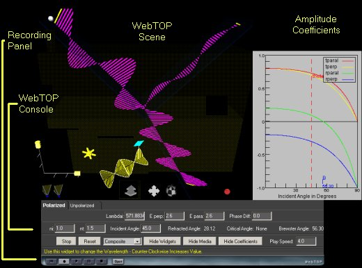
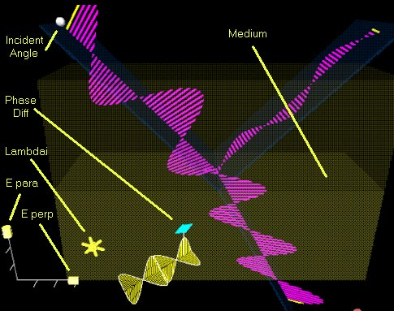
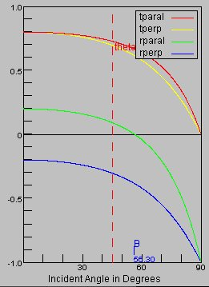
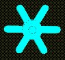
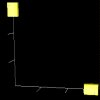
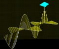
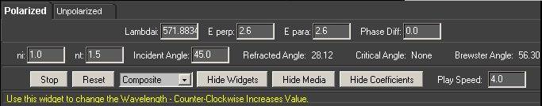
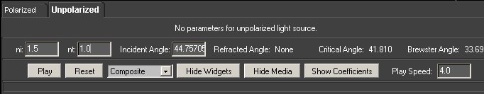

Reflection and Refraction - Vectorial: Directions
Under normal operation, your WebTOP window should look like the following:
|

|
| Figure 1 Reflection/Refraction
module layout
| The WebTOP window has four parts. The top portion is the active WebTOP scene.
The second portion is the VRML Navigation controls.
The third portion, the console, contains a message line that provides help on the operation of the Widgets and keyboard entry boxes.
The fourth portion is the recording panel that allows you to record and replay WebTOP sessions. You may scroll down to read on, or
select the appropriate link from the following items:
How To Change
Parameters
During normal operation of the module, as shown in Figure 1, the module
displays both a WebTOP scene and a graph of the Amplitude coefficients. Figure
2 will focus on the WebTOP scene and the widgets used for this module:
|
 |
| Figure 2 Manipulation of the Reflection/Refraction
module | In this module you can change the properties of the incident light and the
medium of the incident and refracted beams. The parameters that you can change are the magnitudes of the parallel
and perpendicular components of the electric field
(E para and E perp), the initial phase difference between
Epara and Eperp and the incident
angle of the beam. These parameters can
be changed by manipulating the widgets in the scene or by using the
WebTOP Console. Changing the index of refraction of both mediums and changing the initial
polarization of the light (choosing between polarized or unpolarized
light) are done by using the Console.
You can also use the Console to control the look and the operation of the
module.
|

|
| Figure 3 Amplitude Coefficients graph |
The module displays a graph of the amplitude coefficients. The graph can be
hidden/shown from a button at the WebTOP console. Description of the amplitude
coefficients is provided at the theory section.
This module includes four types of widgets: a wheel, a slider, a ball, and
phase difference.
The widgets are shown in the following Figures:
|  |
 |
| Wheel Widget |
Slider Widget |
|
 |
| Ball Widget |
Phase Difference Widget |
To change a parameter, you need to position your cursor over the proper
widget. Once you have placed the cursor over the widget, the cursor changes shape.If you click on the left mouse button, a message explaining the operation
of the widget appears at the help portion of the WebTOP console.
Note that the wave becomes static when the widget is engaged. The animation is restored after you release the widget. Note also that
while changing a parameter with a widget, the corresponding value is updated in the corresponding input box.
Changing a Parameter with the Wheel Widget:
Once you select the wheel, drag and rotate the cursor to the left if you want to
decrease the wavelength or the right if you want to increase it. Note that the
color of the wave is not representative of the wavelength of the light used. You may need to repeat dragging in the same
direction until you obtain the desired wavelength.
Changing a Parameter with the Slider Widget:
The slider can be used to change Epara or Eperp. Select the desired
slider and move it along the axis until you obtain the desired value.
Changing a Parameter with the Ball Widget:
You select the ball widget by positioning the cursor over the ball. Moving the
ball allows you to rotate the angle of incidence.
Changing a Parameter with the Phase-Difference Widget:
This widget allows you to change the phase difference between the two
electric field components of the incident wave. Select the double-cone on the phase difference widget and move it
either forward or backward along the direction of the wave path.
Changing Parameter With the WebTOP Console:
The Controls and Parameters Panel provides two interfaces: one
for polarized light and one for unpolarized light. You can switch between them by clicking on the appropriate Tab. In either interface, you may change the parameters by typing the values in the "Keyboard
Entry Boxes" then pressing the "Enter" key. A selection
box allows you to select component of the wave you want to visualize. You may
hide all widgets and display them again by using the Hide
Widgets/Show Widgets button. The Stop/Play
button allows you stop and restart the simulation. It is
recommended that you Stop the simulation before exiting or moving to
another page.
The following figures show different setting of the Controls &
Parameters Panel:
|  |
| Controls & Parameters Panel: Polarized light is
selected. |
|
 |
| Controls & Parameters Panel: Unpolarized light is
selected. |
|